IPS9 in R: Looking at Data – Relationships (Chapter 2)
Margaret Chien and Nicholas Horton (nhorton@amherst.edu)
July 26, 2018
Introduction and background
These documents are intended to help describe how to undertake analyses introduced as examples in the Ninth Edition of (2017) by Moore, McCabe, and Craig.
More information about the book can be found here. The data used in these documents can be found under Data Sets in the Student Site. This file as well as the associated R Markdown reproducible analysis source file used to create it can be found at https://nhorton.people.amherst.edu/ips9/.
This work leverages initiatives undertaken by Project MOSAIC (http://www.mosaic-web.org), an NSF-funded effort to improve the teaching of statistics, calculus, science and computing in the undergraduate curriculum. In particular, we utilize the mosaic package, which was written to simplify the use of R for introductory statistics courses. A short summary of the R needed to teach introductory statistics can be found in the mosaic package vignettes (http://cran.r-project.org/web/packages/mosaic). A paper describing the mosaic approach was published in the R Journal: https://journal.r-project.org/archive/2017/RJ-2017-024.
Chapter 2: Looking at Data – Relationships
This file replicates the analyses from Chapter 2: Looking at Data – Relationships.
First, load the packages that will be needed for this document:
library(mosaic)
library(readr)
library(vcd)Section 2.1: Relationships
Section 2.2: Scatterplots
Example 2.8: Laundry detergents
# page 85
Laundry <- read_csv("https://nhorton.people.amherst.edu/ips9/data/chapter02/EG02-008LAUNDRY.csv")## Parsed with column specification:
## cols(
## Price = col_double(),
## Rating = col_double(),
## Type = col_character()
## )We use read_csv() from the readr package to import data into R. We can use message=FALSE to suppress the warning messages for readability.
# 2.10: Examine the spreadsheet
favstats(~ Rating, data = Laundry)## min Q1 median Q3 max mean sd n missing
## 25 42 51 61 85 53 14 53 0The favstats() function summarizes useful statistics of variables.
# 2.11: Use the data set
gf_histogram(~ Rating, data = Laundry, binwidth = 5)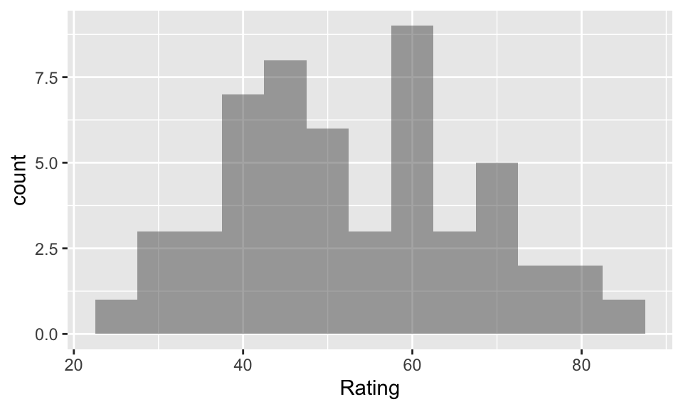
favstats(~ Price, data = Laundry)## min Q1 median Q3 max mean sd n missing
## 5 12 14 24 56 17 8.8 53 0gf_histogram(~ Price, data = Laundry, binwidth = 5)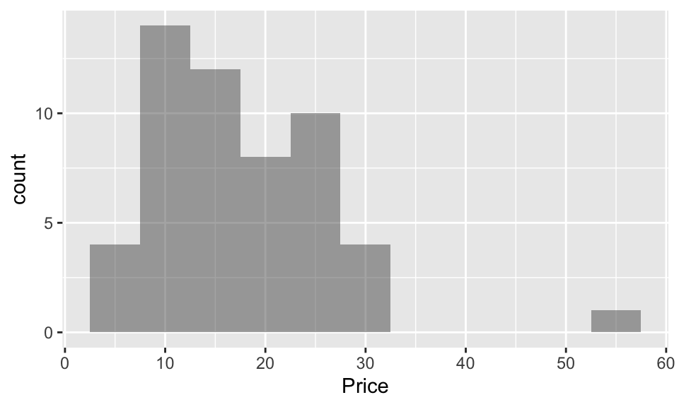
Example 2.9: Laundry detergents
Laundry <- read_csv("https://nhorton.people.amherst.edu/ips9/data/chapter02/EG02-009LAUNDRY.csv")## Parsed with column specification:
## cols(
## Price = col_double(),
## Rating = col_double(),
## Type = col_character()
## )# Figure 2.1, page 86
gf_point(Rating ~ Price, data = Laundry, xlab = "Price per load (cents)")# Figure 2.2
gf_point(Rating ~ Price, data = Laundry, xlab = "Price per load (cents)") %>%
gf_lims(x = c(0, 35))## Warning: Removed 1 rows containing missing values (geom_point).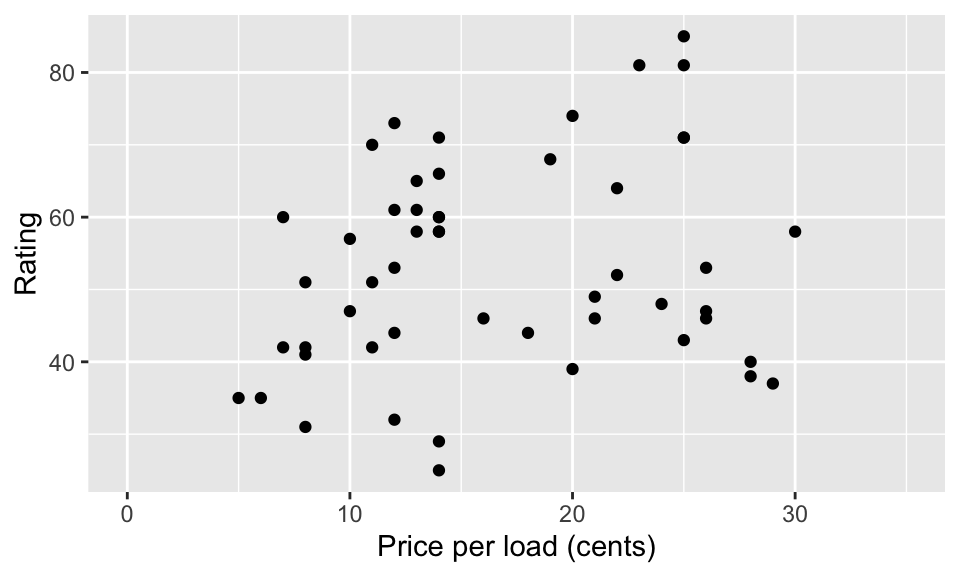
# 2.12: Make a scatterplot (page 87)
gf_jitter(Rating ~ Price, data = Laundry, xlab = "Price per load (cents)") %>%
gf_lims(x = c(0, 35))## Warning: Removed 1 rows containing missing values (geom_point).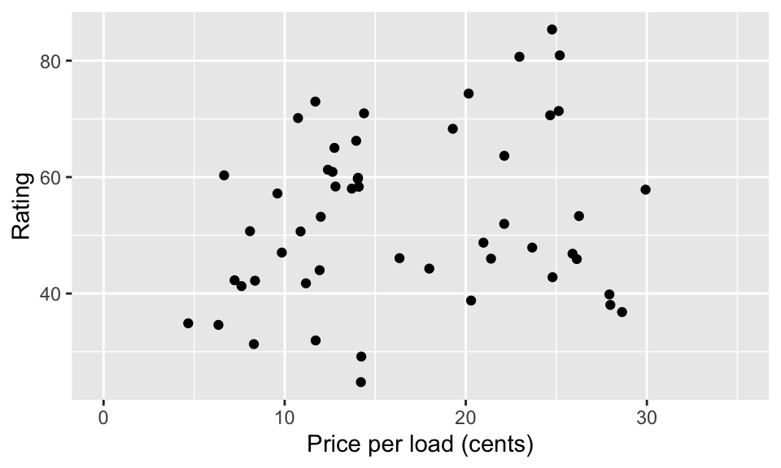
We can use gf_jitter() to add some noise into the plot to show overlapped points. We also use gf_lims() to set x-axis limits on the plot.
# 2.13: Change the units
Laundry2 <- Laundry %>%
mutate(Price = Price/100)
favstats(~ Price, data = Laundry2)## min Q1 median Q3 max mean sd n missing
## 0.05 0.12 0.14 0.24 0.56 0.17 0.088 53 0gf_point(Rating ~ Price, data = Laundry2, xlab = "Price per load (dollars)")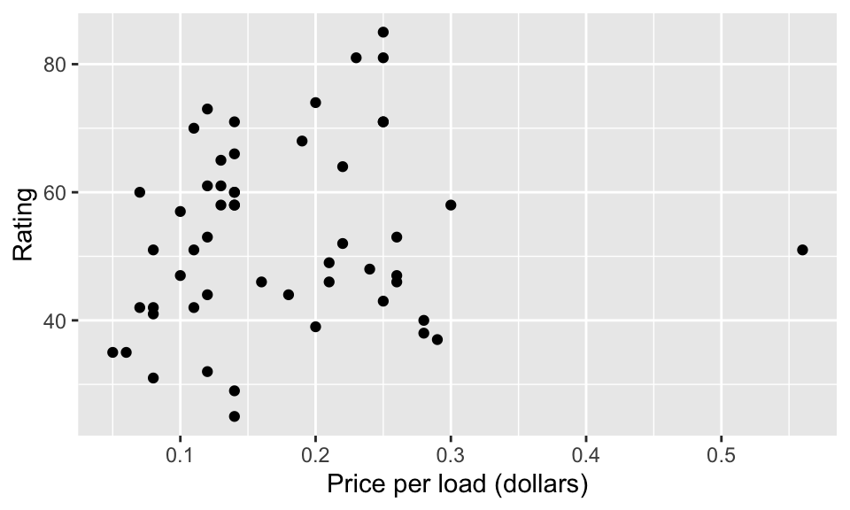
We use mutate() to create new variables in a dataset.
Example 2.10: Scatterplot with a straight line
Laundry <- read_csv("https://nhorton.people.amherst.edu/ips9/data/chapter02/EG02-010LAUND.csv")## Parsed with column specification:
## cols(
## Price = col_double(),
## Rating = col_double(),
## Type = col_character()
## )# Figure 2.3, page 88
gf_point(Rating ~ Price, data = Laundry, xlab = "Price per load (cents)") %>%
gf_lm()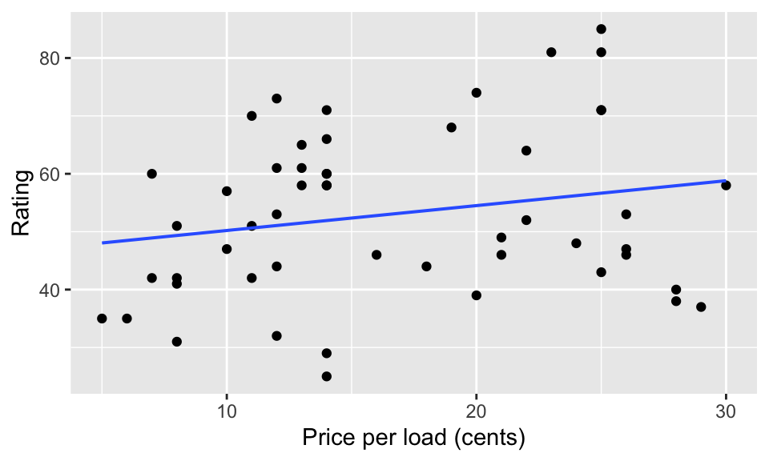
Example 2.11: Education spending and population: Benchmarking
EduSpending <- read_csv("https://nhorton.people.amherst.edu/ips9/data/chapter02/EG02-011EDSPEND.csv")## Parsed with column specification:
## cols(
## State = col_character(),
## Spending = col_double(),
## Population = col_double()
## )head(EduSpending)## # A tibble: 6 x 3
## State Spending Population
## <chr> <dbl> <dbl>
## 1 Alabama 14.9 4.9
## 2 Alaska 3.8 0.7
## 3 Arizona 14.8 6.8
## 4 Arkansas 8.5 3
## 5 California 111. 39.2
## 6 Colorado 14.3 5.4We can use the head() function to look at the first rows of a data set.
# Figure 2.5, page 90
gf_point(Spending ~ Population, data = EduSpending) %>%
gf_lm() %>%
gf_labs(x = "Population (millions)", y = "Spending ($ billion)")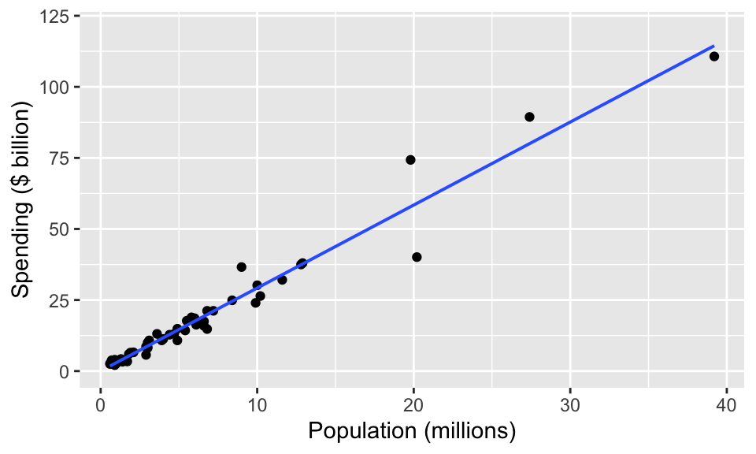
Example 2.12: Calcium retention
Calcium <- read_csv("https://nhorton.people.amherst.edu/ips9/data/chapter02/EG02-012CALCIUM.csv")## Parsed with column specification:
## cols(
## CaIntake = col_double(),
## CaRetention = col_double(),
## LogRet = col_double()
## )# Figure 2.6, page 90
gf_point(CaRetention~ CaIntake, data = Calcium) %>%
gf_smooth(span = 1) %>%
gf_labs(x = "Calcium intake (mg/d)", y = "Calcium retention (mg/d)")## `geom_smooth()` using method = 'loess' and formula 'y ~ x'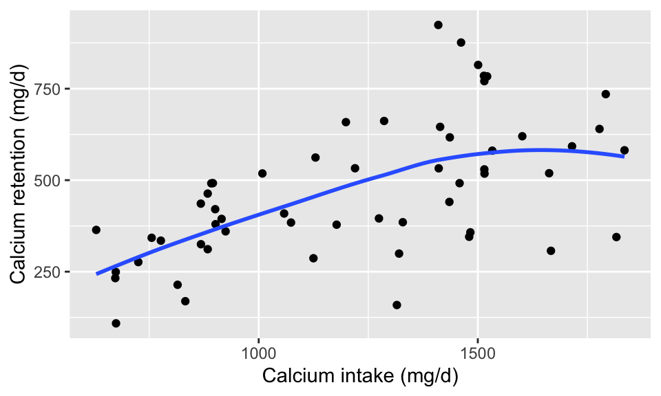
Example 2.13: Calcium retention with logarithms
Calcium <- read_csv("https://nhorton.people.amherst.edu/ips9/data/chapter02/EG02-013CALCIUM.csv")## Parsed with column specification:
## cols(
## CaIntake = col_double(),
## CaRetention = col_double(),
## LogRet = col_double()
## )# Figure 2.7, page 91
gf_point(LogRet ~ CaIntake, data = Calcium) %>%
gf_lm() %>%
gf_labs(x = "Calcium intake (mg/d)", y = "Log calcium retention")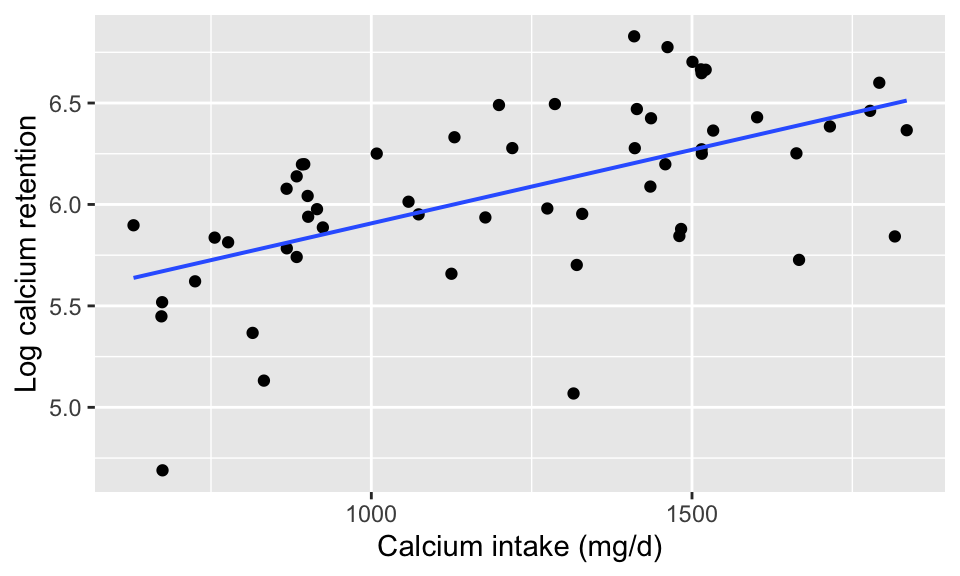
Example 2.14: Education spending and population with logarithms
EduSpending <- read_csv("https://nhorton.people.amherst.edu/ips9/data/chapter02/EG02-014EDSPEND.csv")## Parsed with column specification:
## cols(
## State = col_character(),
## Spending = col_double(),
## Population = col_double()
## )EduSpending <- EduSpending %>%
mutate(LogPop = log(Population), LogSpend = log(Spending))
# Figure 2.8, page 92
gf_point(LogSpend ~ LogPop, data = EduSpending) %>%
gf_lm() %>%
gf_labs(x = "Log population", y = "Log spending")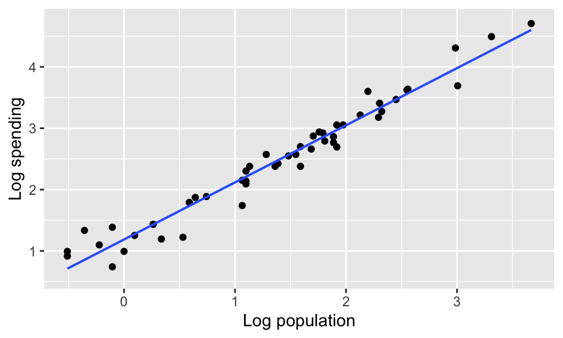
Example 2.15: Rating versus price and type of laundry detergent
Laundry <- read_csv("https://nhorton.people.amherst.edu/ips9/data/chapter02/EG02-015LAUND.csv")## Parsed with column specification:
## cols(
## Price = col_double(),
## Rating = col_double(),
## Type = col_character()
## )# Figure 2.9, page 93
gf_point(Rating ~ Price, color = ~ Type, data = Laundry, xlab = "Price per load (cents)") %>%
gf_lm()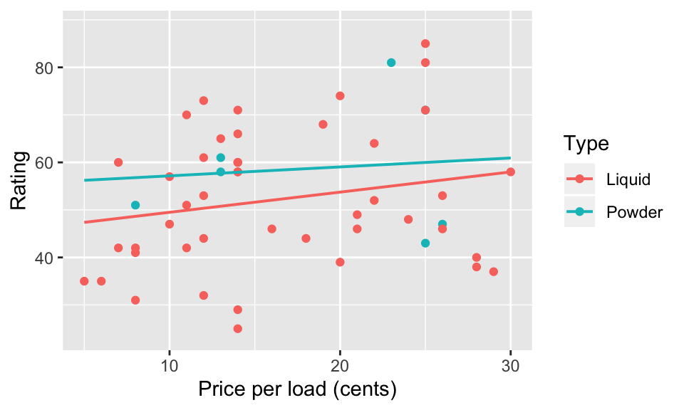
Example 2.16: Laundry rating versus price with a smooth fit
Laundry <- read_csv("https://nhorton.people.amherst.edu/ips9/data/chapter02/EG02-016LAUND.csv")## Parsed with column specification:
## cols(
## Price = col_double(),
## Rating = col_double(),
## Type = col_character()
## )# Figure 2.10, page 94-95
gf_point(Rating ~ Price, data = Laundry) %>%
gf_smooth(span = .5)## `geom_smooth()` using method = 'loess' and formula 'y ~ x'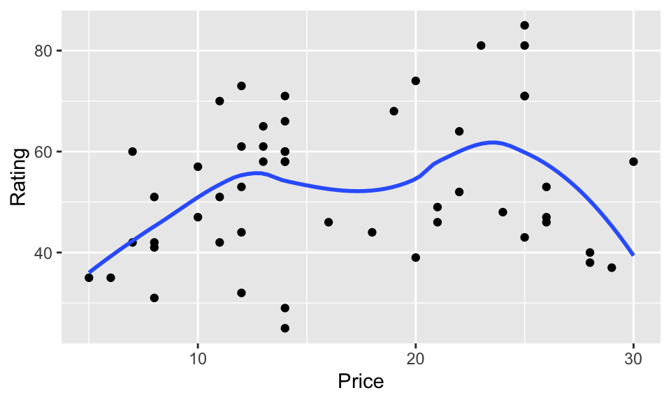
gf_point(Rating ~ Price, data = Laundry) %>%
gf_smooth(span = 5)## `geom_smooth()` using method = 'loess' and formula 'y ~ x'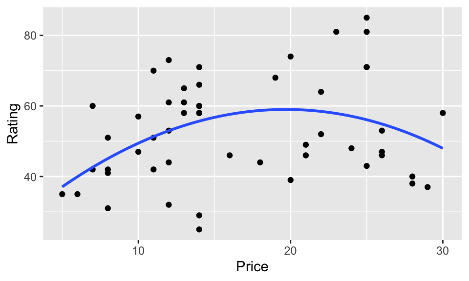
Example 2.17: A smooth fit for education spending and population with logs
# Figure 2.8, page 92
gf_point(LogSpend ~ LogPop, data = EduSpending) %>%
gf_smooth() %>%
gf_labs(x = "Log population", y = "Log spending")## `geom_smooth()` using method = 'loess' and formula 'y ~ x'Section 2.3: Correlation
Use Your Knowledge: Laundry detergents
# page 102
cor(Rating ~ Price, data = Laundry)## [1] 0.21The cor() function finds the correlation of two variables.
Section 2.4: Least Squares Regression
Example 2.19: Fidgeting and fat gain
Fidgeting <- read_csv("https://nhorton.people.amherst.edu/ips9/data/chapter02/EG02-019FIDGET.csv")## Parsed with column specification:
## cols(
## NEA = col_double(),
## Fat = col_double(),
## Resid = col_double()
## )# Figure 2.16, page 108
gf_point(Fat ~ NEA, data = Fidgeting) %>%
gf_labs(x = "Nonexercise activity (calories)", y = "Fat gain (kilograms)")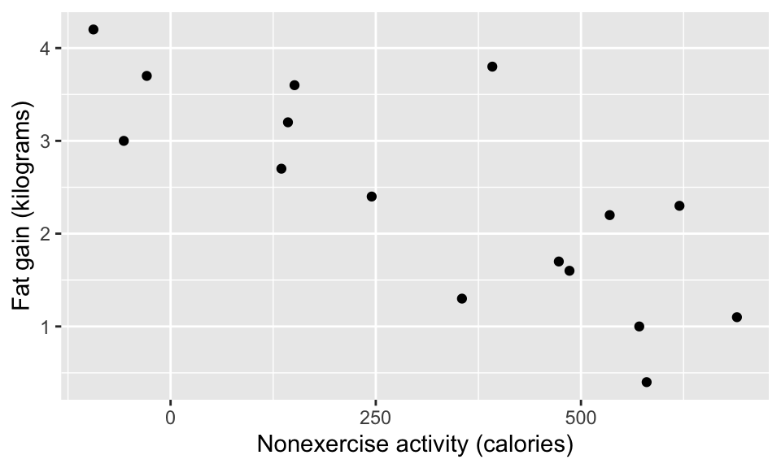
Example 2.20: Regression line for fat gain
Fidgeting <- read_csv("https://nhorton.people.amherst.edu/ips9/data/chapter02/EG02-020FIDGET.csv")## Parsed with column specification:
## cols(
## NEA = col_double(),
## Fat = col_double(),
## Resid = col_double()
## )# Figure 2.17, page 109
gf_point(Fat ~ NEA, data = Fidgeting) %>%
gf_lm() %>%
gf_labs(x = "Nonexercise activity (calories)", y = "Fat gain (kilograms)")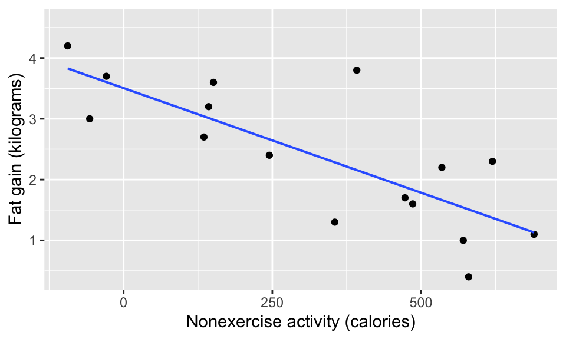
# Use Your Knowledge 2.61: Plot the line
gf_point(Fat ~ NEA, data = Fidgeting) %>%
gf_abline(slope = -.00344, intercept = 4.505) %>%
gf_labs(x = "Nonexercise activity (calories)", y = "Fat gain (kilograms)") +
ylim(0, 5)## Warning in (function (mapping = NULL, data = NULL, ..., slope, intercept, : Using `intercept` and/or `slope` with `mapping` may not have the desired result as mapping is overwritten if either of these is specified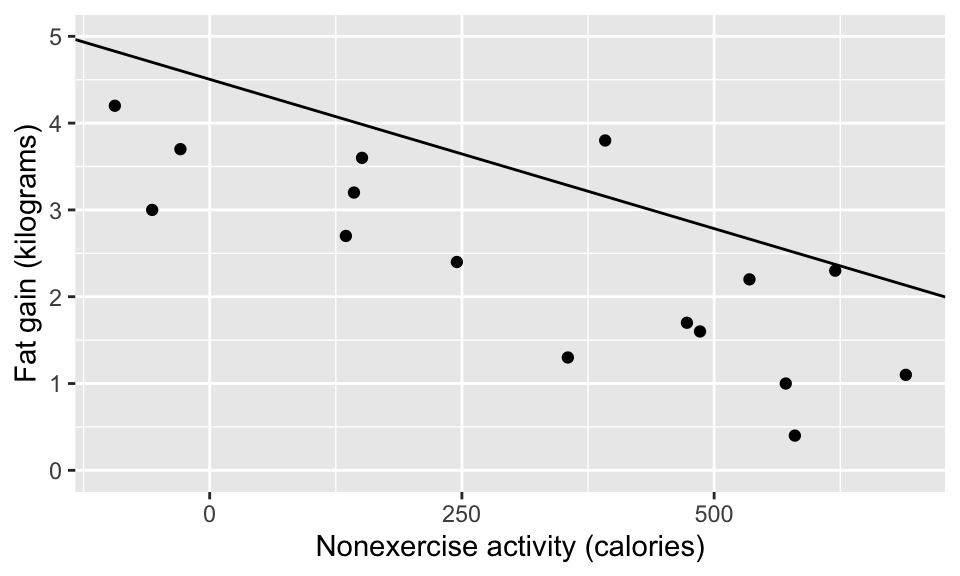
Example 2.21: Prediction for fat gain
fatlm <- lm(Fat ~ NEA, data = Fidgeting)
fatfun <- makeFun(fatlm)
fatfun(NEA = 400)## 1
## 2.1We use makeFun() to create a function. Here, we make a function from our linear model, created from lm(), so we can find the output of a certain value of NEA.
Example 2.24: Regression
# page 113
msummary(fatlm)## Estimate Std. Error t value Pr(>|t|)
## (Intercept) 3.505123 0.303616 11.54 1.5e-08
## NEA -0.003441 0.000741 -4.64 0.00038
##
## Residual standard error: 0.74 on 14 degrees of freedom
## Multiple R-squared: 0.606, Adjusted R-squared: 0.578
## F-statistic: 21.5 on 1 and 14 DF, p-value: 0.000381The msummary() function shows the properties of the function.
Example 2.25: Fidgeting and fat gain
# Figure 2.20, page 115 (split into two plots)
gf_point(Fat ~ NEA, data = Fidgeting) %>%
gf_lm() %>%
gf_labs(x = "Nonexercise activity (calories)", y = "Fat gain (kilograms)")gf_point(NEA ~ Fat, data = Fidgeting) %>%
gf_lm(color = "red") %>%
gf_labs(x = "Fat gain (kilograms)", y = "Nonexercise activity")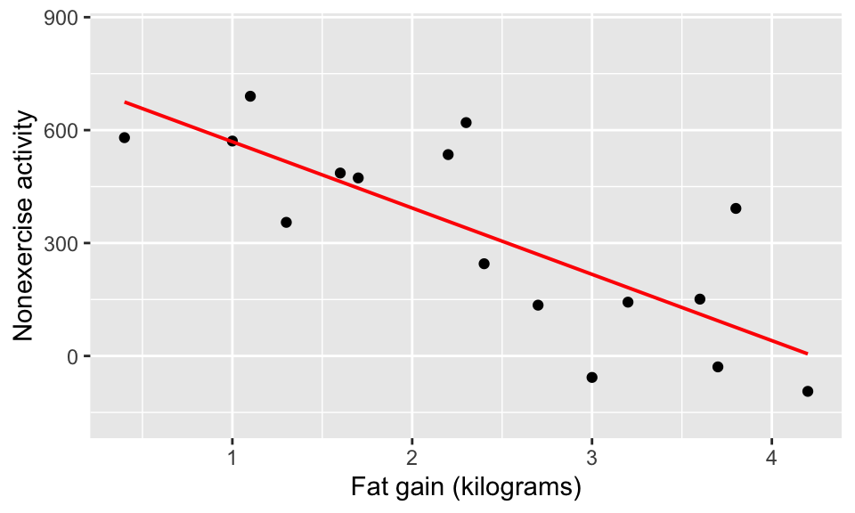
# Models
fatlm##
## Call:
## lm(formula = Fat ~ NEA, data = Fidgeting)
##
## Coefficients:
## (Intercept) NEA
## 3.50512 -0.00344NEAlm <- lm(NEA ~ Fat, data = Fidgeting)
NEAlm##
## Call:
## lm(formula = NEA ~ Fat, data = Fidgeting)
##
## Coefficients:
## (Intercept) Fat
## 745 -176Section 2.5: Cautions about Correlation and Regression
Example 2.26: Residuals for fat gain
Here, we find the residual:
fatfun(NEA = 135)## 1
## 32.7 - fatfun(NEA = 135)## 1
## -0.34# Figure 2.23, page 124
gf_point(Fat ~ NEA, data = Fidgeting) %>%
gf_lm() %>%
gf_labs(x = "Nonexercise activity (calories)", y = "Fat gain (kilograms)")
gf_point(resid(fatlm) ~ NEA, data = Fidgeting) %>%
gf_lm() %>%
gf_labs(x = "Nonexercise activity (calories)", y = "Residual")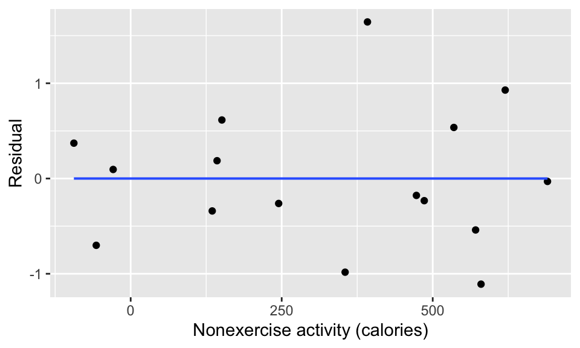
Example 2.27: Patterns in birthrate and Internet user residuals
IntBirth <- read_csv("https://nhorton.people.amherst.edu/ips9/data/chapter02/EG02-027INBIRTH.csv")## Parsed with column specification:
## cols(
## Country_Name = col_character(),
## CountryCode = col_character(),
## BirthRate2011 = col_double(),
## UsersPreviousYear = col_double(),
## Users = col_double(),
## LogBirth = col_double(),
## LogUsers = col_double()
## )intbirthlm <- lm(BirthRate2011 ~ Users, data = IntBirth)
# Figure 2.24, page 126
gf_point(BirthRate2011 ~ Users, data = IntBirth) %>%
gf_lm() %>%
gf_labs(x = "Internet users per 100 people", y = "Births per 1000 people")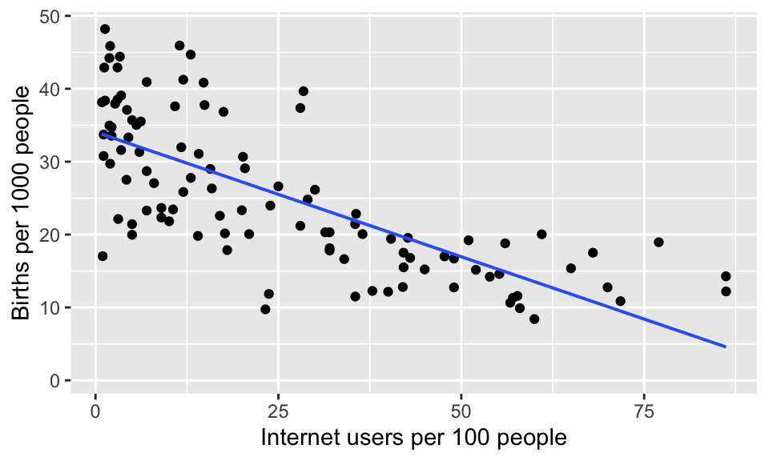
gf_point(resid(intbirthlm) ~ Users, data = IntBirth) %>%
gf_lm() %>%
gf_labs(x = "Internet users per 100 people", y = "Residual")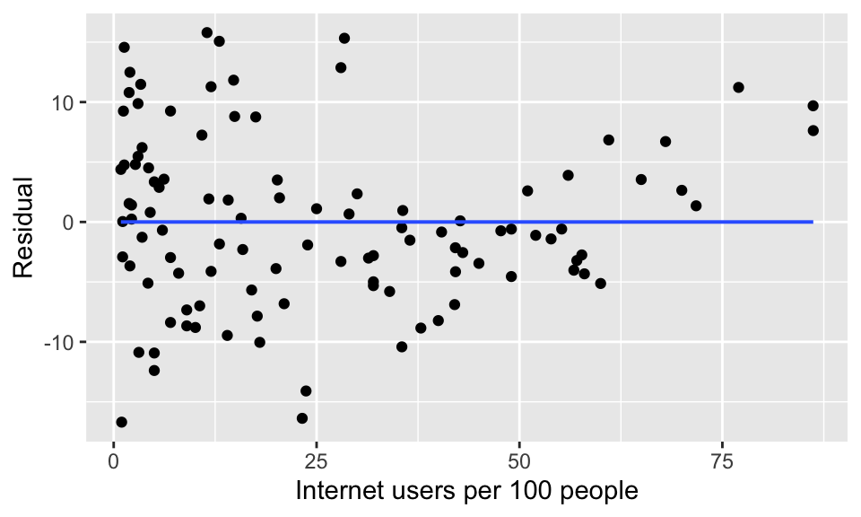
Example 2.28: Diabetes and blood sugar
Diabetes <- read_csv("https://nhorton.people.amherst.edu/ips9/data/chapter02/EG02-028HBA1C.csv")## Parsed with column specification:
## cols(
## Subject = col_double(),
## HbA1c_percent = col_double(),
## FPG_mg_ml = col_double()
## )diabeteslm <- lm(FPG_mg_ml ~ HbA1c_percent, data = Diabetes)
# Figure 2.25, page 127
gf_point(FPG_mg_ml ~ HbA1c_percent, data = Diabetes) %>%
gf_lm() %>%
gf_labs(x = "HbA1c (percent)", y = "Fasting plasma glucose (mg/dl)")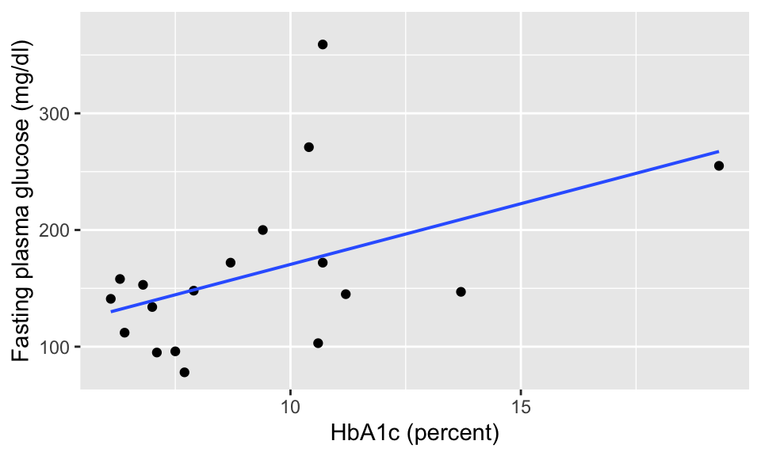
gf_point(resid(diabeteslm) ~ HbA1c_percent, data = Diabetes) %>%
gf_lm() %>%
gf_labs(x = "HbA1c (percent)", y = "Residual")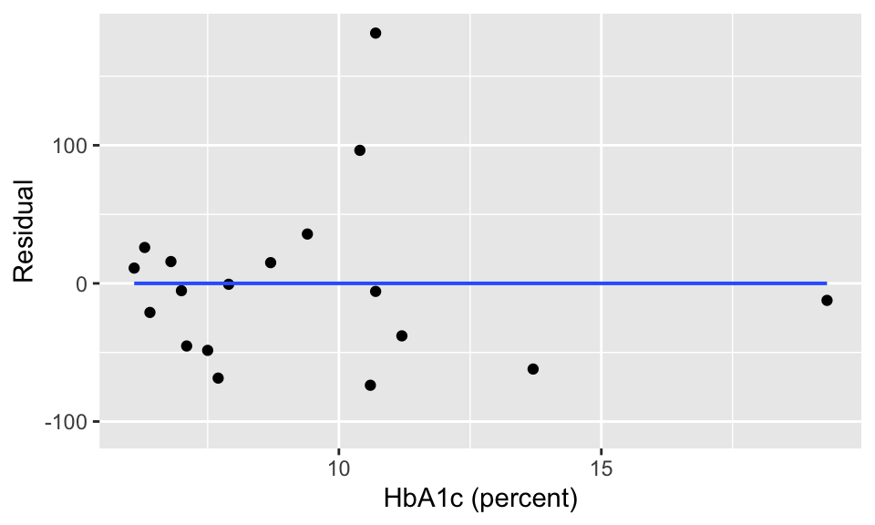
Example 2.29: Influential observations
We can use the filter() function to remove rows from a data set:
without15lm <- lm(FPG_mg_ml ~ HbA1c_percent, data = filter(Diabetes, FPG_mg_ml <= 300)) # model without subject 15
without18lm <- lm(FPG_mg_ml ~ HbA1c_percent, data = filter(Diabetes, HbA1c_percent <= 18)) # model without subject 18
# Figure 2.26, page 129
gf_point(FPG_mg_ml ~ HbA1c_percent, data = Diabetes) %>%
gf_lm(color = "red") %>%
gf_fun(without15lm, linetype = 2, color = "red") %>%
gf_fun(without18lm, linetype = 3, color = "red") %>%
gf_labs(x = "HbA1c (percent)", y = "Fasting plasma glucose (mg/dl)")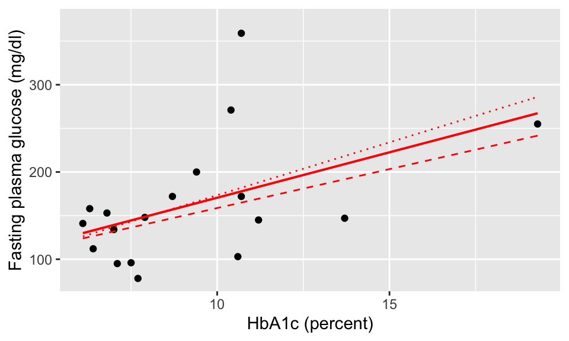
Section 2.6: Data Analysis from Two Way Tables
Example 2.33: Is the calcium intake adequate?
Calcium <- read_csv("https://nhorton.people.amherst.edu/ips9/data/chapter02/EG02-033IOM.csv")## Parsed with column specification:
## cols(
## Age = col_character(),
## Met = col_character(),
## Count = col_double()
## )Calcium## # A tibble: 4 x 3
## Age Met Count
## <chr> <chr> <dbl>
## 1 A05to10 No 194
## 2 A05to10 Yes 861
## 3 A11to13 No 557
## 4 A11to13 Yes 417To create a data set with the structure we want (with each count as an observation), we can use rbind().
# page 137
# Creating data set from counts in the data table
CalciumC <- rbind(
do(194) * data.frame(Age = "A05to10", Met = "No"),
do(861) * data.frame(Age = "A05to10", Met = "Yes"),
do(557) * data.frame(Age = "A11to13", Met = "No"),
do(417) * data.frame(Age = "A11to13", Met = "Yes")
)
# Table
tally(Met ~ Age, data = CalciumC)## Age
## Met A05to10 A11to13
## No 194 557
## Yes 861 417Example 2.34: Add the margins to the table
tally(Met ~ Age, data = CalciumC, margins = TRUE)## Age
## Met A05to10 A11to13
## No 194 557
## Yes 861 417
## Total 1055 974tally(Age ~ Met, data = CalciumC, margins = TRUE)## Met
## Age No Yes
## A05to10 194 861
## A11to13 557 417
## Total 751 1278Example 2.35: The joint distribution
tally(~ Age + Met, data = CalciumC, format = "proportion")## Met
## Age No Yes
## A05to10 0.096 0.424
## A11to13 0.275 0.206Example 2.36: The marginal distribution of age
tally(~ Age, data = CalciumC, format = "proportion")## Age
## A05to10 A11to13
## 0.52 0.48Example 2.37: The marginal distribution of “met requirement”
tally(~ Met, data = CalciumC, format = "proportion")## Met
## No Yes
## 0.37 0.63Example 2.39: Conditional distribution of “met requirement” for children aged 5 to 10
# page 141
tally(Met ~ Age, data = CalciumC, format = "proportion")## Age
## Met A05to10 A11to13
## No 0.18 0.57
## Yes 0.82 0.43Example 2.40: Software output
We can use the mosaic() function from the vcd package to create mosaic plots with color.
# Figure 2.28 mosaic plot (page 143)
vcd::mosaic(~ Met + Age, data = CalciumC, shade = TRUE)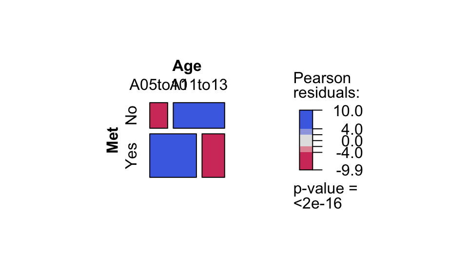
Example 2.41: Which customer service representative is better?
# page 143
CustomerService <- read_csv("https://nhorton.people.amherst.edu/ips9/data/chapter02/EG02-041CUSTSER.csv")## Warning: Missing column names filled in: 'X4' [4], 'X9' [9]## Warning: Duplicated column names deduplicated: 'Rep' => 'Rep_1' [5],
## 'GoalMet' => 'GoalMet_1' [6], 'Count' => 'Count_1' [8], 'Rep' =>
## 'Rep_2' [10], 'GoalMet' => 'GoalMet_2' [11], 'Week' => 'Week_1' [12],
## 'Count' => 'Count_2' [13]## Parsed with column specification:
## cols(
## Rep = col_character(),
## GoalMet = col_character(),
## Count = col_double(),
## X4 = col_logical(),
## Rep_1 = col_character(),
## GoalMet_1 = col_character(),
## Week = col_double(),
## Count_1 = col_double(),
## X9 = col_logical(),
## Rep_2 = col_character(),
## GoalMet_2 = col_character(),
## Week_1 = col_double(),
## Count_2 = col_double()
## )CustomerService %>%
select(Rep, GoalMet, Count)## # A tibble: 4 x 3
## Rep GoalMet Count
## <chr> <chr> <dbl>
## 1 Alexis Yes 172
## 2 Alexis No 28
## 3 Peyton Yes 118
## 4 Peyton No 82Example 2.42: Look at the data more carefully
CustomerService %>%
select(Rep, GoalMet_1, Count_1, GoalMet_2, Count_2)## # A tibble: 4 x 5
## Rep GoalMet_1 Count_1 GoalMet_2 Count_2
## <chr> <chr> <dbl> <chr> <dbl>
## 1 Alexis Yes 162 Yes 10
## 2 Alexis No 18 No 10
## 3 Peyton Yes 19 Yes 99
## 4 Peyton No 1 No 81